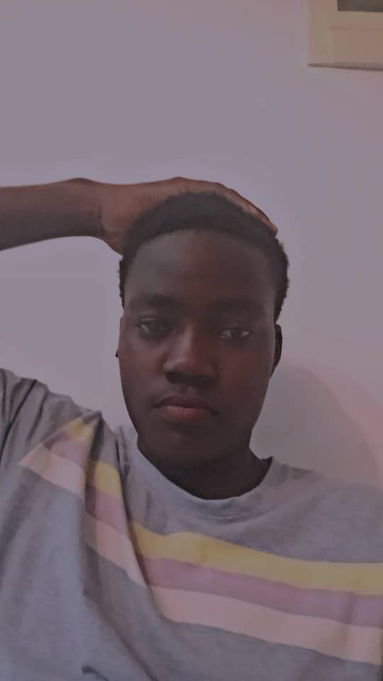

À propos du projet
Ce projet est un jeu de formation interactif conçu pour apprendre et pratiquer les propriétés CSS et JavaScript de manière amusante. La poule doit atteindre son oeuf en manipulant le CSS ou le JS à chaque étape. Le joueur apprend en faisant 💻🎯.
👨🏾💻 À propos du codeur

Je suis Tressi, un développeur passionné basé au Cameroun. J’aime créer des outils éducatifs, simples et funs, pour aider les autres à progresser en développement web.